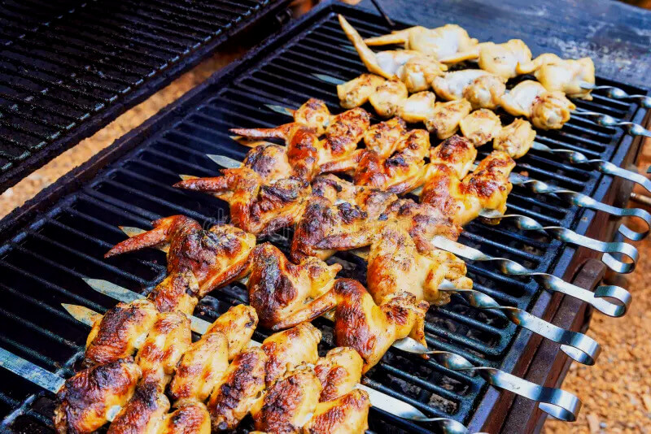
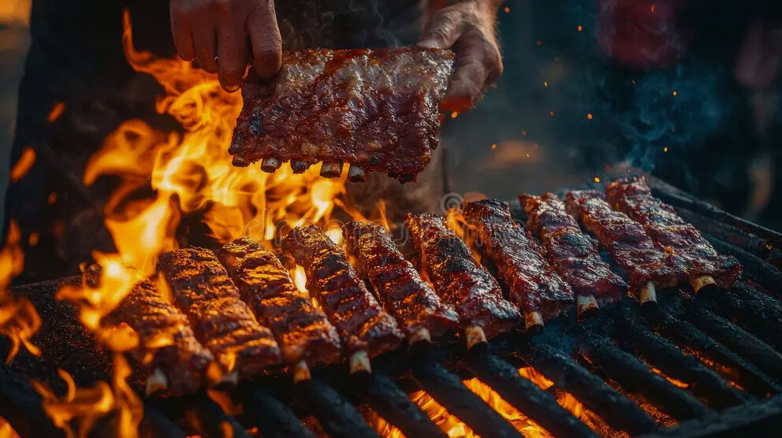

Here are three BBQ recipes to try at home. Whether you have a smoker, a grill, or just an oven, we have something for you.
Smoked Brisket

Brisket takes time, but the smoky flavor makes it worth the wait.
Cooking Method: Smoking
Prep Time: 15 minutes
Cook Time: About 6 to 8 hours
Ingredients
- 3 to 4 lb beef brisket
- 2 tablespoons salt
- 2 tablespoons black pepper
- 1 tablespoon garlic powder
- Smoking wood
Instructions
- Preheat the smoker to 225°F.
- Mix the salt, pepper, and garlic powder.
- Season the brisket on all sides.
- Place the brisket in the smoker.
- Smoke until the meat becomes tender, usually around 195°F to 205°F internally. Cooking time may vary.
- Let the brisket rest before slicing.
Honey BBQ Chicken

Sweet, smoky, and easy to make. A good choice for a backyard cookout.
Cooking Method: Grilling
Prep Time: 10 minutes
Cook Time: About 15 minutes
Ingredients
- 1 lb boneless chicken thighs
- 1/2 cup BBQ sauce
- 2 tablespoons honey
- 1 teaspoon garlic powder
- Salt and pepper
Instructions
- Preheat the grill to medium heat.
- Season the chicken with salt, pepper, and garlic powder.
- Mix the BBQ sauce and honey in a bowl.
- Place the chicken on the grill.
- Cook for about 5 to 7 minutes per side.
- Brush the honey BBQ sauce onto the chicken near the end of cooking.
- Keep cooking until the chicken reaches 165°F internally.
- Remove from the grill and serve.
BBQ Ribs

BBQ ribs are a classic cookout favorite. They can be baked in the oven and finished with plenty of sauce.
Cooking Method: Oven BBQ
Prep Time: 15 minutes
Cook Time: About 2.5 to 3 hours
Ingredients
- 1 rack of pork ribs
- 1 cup BBQ sauce
- 1 tablespoon garlic powder
- 1 tablespoon paprika
- Salt and pepper
Instructions
- Preheat the oven to 300°F.
- Season the ribs with garlic powder, paprika, salt, and pepper.
- Wrap the ribs in foil and place them on a baking sheet.
- Bake for about 2.5 to 3 hours until the ribs are tender and cooked through.
- Remove the foil and brush the ribs with BBQ sauce.
- Return to the oven for another 10 to 15 minutes.
- Slice and serve.